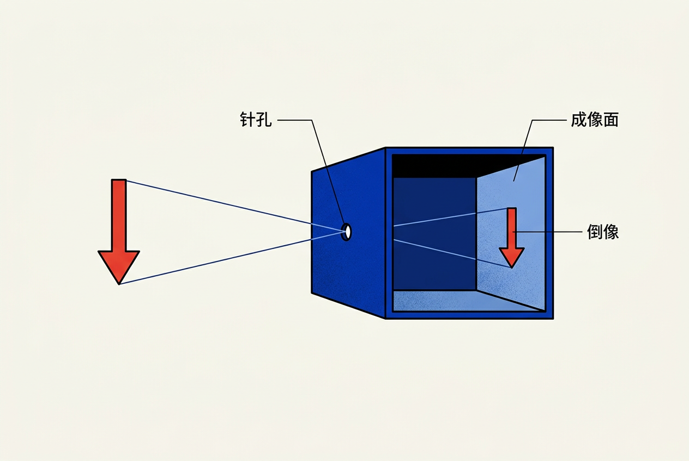
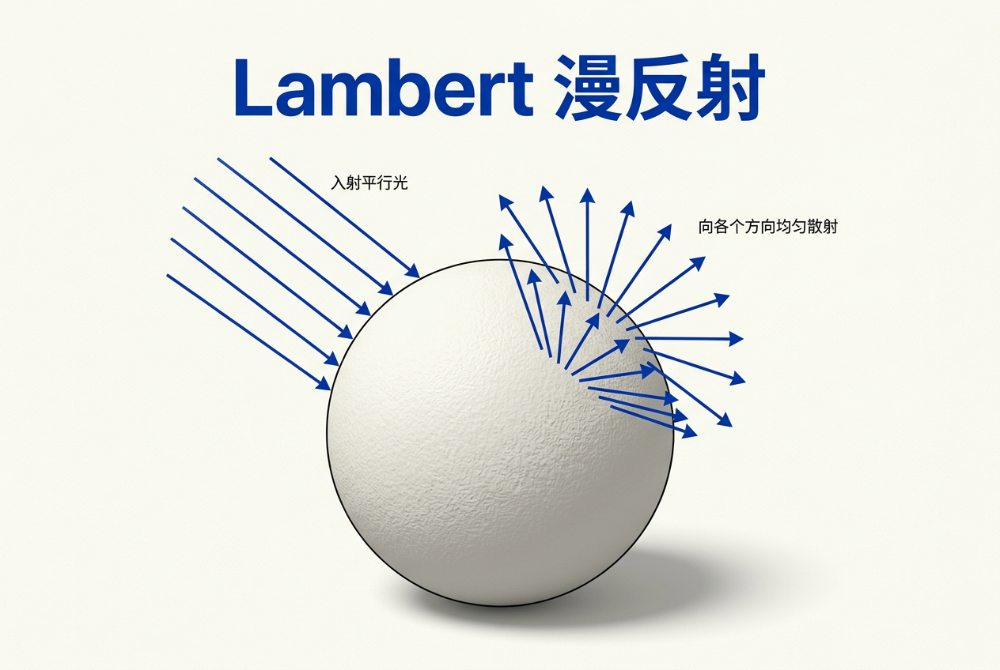
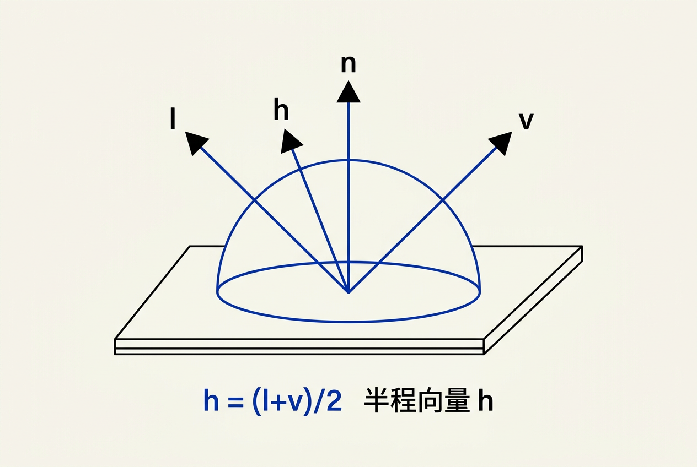
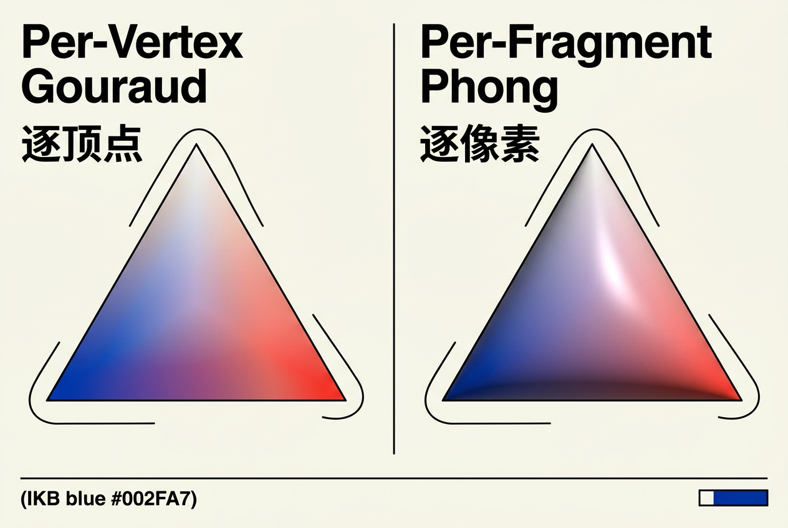
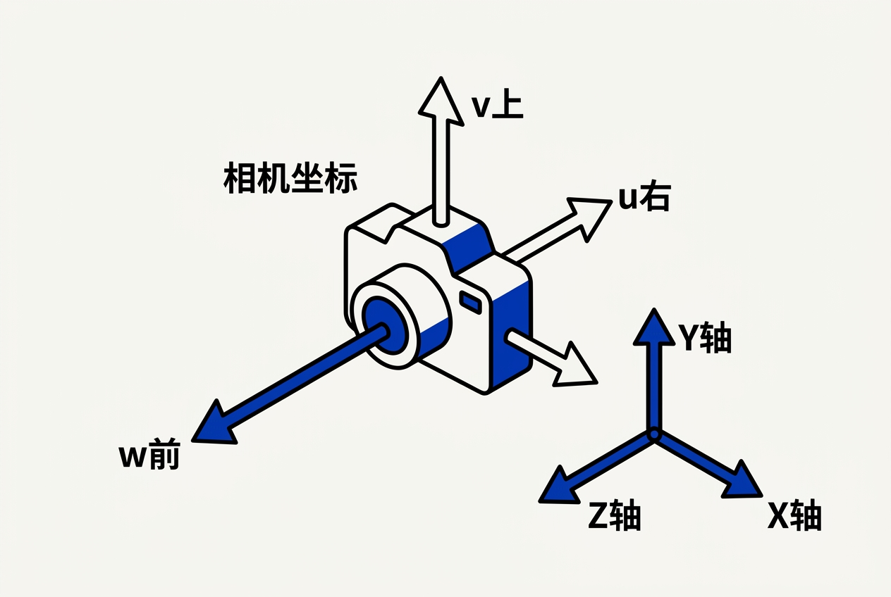

第5章：表面着色 — 零基础讲义
讲义说明
本讲义基于 Steve Marschner & Peter Shirley 所著《虎书5》第5版第5章（p.97-122）。
表面着色（Surface Shading）是计算机图形学中"画颜色"的核心——它回答了一个看似简单的问题：给定一个表面点，它应该是什么颜色？
本版插画采用 Guizang 材质插画风格重新绘制。
学习目标
- 理解"着色"的本质——从几何到颜色的映射
- 掌握Lambert漫反射模型的数学直觉和代码实现
- 掌握Blinn-Phong高光模型——半程向量的巧妙设计
- 理解逐顶点 vs 逐像素着色的工程权衡
- 了解环境光和阴影的简单实现
- 建立从经验模型（Blinn-Phong）到物理模型（PBR）的过渡认知
前置知识：向量运算必读
在正式进入着色之前，我们必须先掌握几个基本数学工具。如果你已经有基础，可以直接跳过；如果你是零基础，请仔细阅读这一节。
1. 法线（Normal）
法线是垂直于表面的单位向量。它是着色中最基础的概念——所有的光照计算都依赖于法线。
| 类型 | 法线方向 | 举例 |
|---|---|---|
| 平面法线 | 垂直于平面 | 水平地面法线 = (0, 1, 0) |
| 球面法线 | 从球心指向表面 | 点p处的法线 = normalize(p - 球心) |
| 曲面法线 | 垂直于切平面 | 在光滑曲面上每个点的法线都不同 |
2. 点积（Dot Product）
两个向量的点积返回一个标量（单个数值）。这是着色中最重要的运算——没有之一。

| 用法 | 公式 | 几何意义 |
|---|---|---|
| 求夹角 | cosθ = (a·b)/(||a||·||b||) | 两个方向之间夹角的余弦值 |
| 投影长度 | a在b上的投影 = a·(b/||b||) | 一个向量在另一个方向上的"分量" |
| 判断朝向 | a·b > 0 | 两向量夹角 < 90°（朝向同一侧） |
| 判断背向 | a·b < 0 | 两向量夹角 > 90°（朝向反侧） |
关键直觉：当两个向量都是单位长度时，a·b 就是 cosθ。这个值在θ=0°时为1（完全对齐），θ=90°时为0（垂直），θ=180°时为-1（完全相反）。
3. 方向关系——着色中的"四大方向"
着色涉及四个关键方向向量，理解它们的关系是理解本章全部内容的前提：
| 符号 | 名称 | 含义 |
|---|---|---|
| n | 法线 | 垂直于表面的单位向量，指向表面外侧 |
| l | 光线方向 | 从表面点指向光源的单位向量 |
| v | 视线方向 | 从表面点指向相机/眼睛的单位向量 |
| h | 半程向量 | h = (l + v) / ||l + v||，光源和视线之间的"中间方向" |
光源 相机
↑ l ↑ v
\ /
\ /
\ /
\ h /
\ ↑ /
\ | /
\| /
────────────●──────→ 表面
|
| n（法线）
↓5.1 什么是着色（Shading）？
5.1.1 着色的核心问题
着色 = 决定一个表面点应该呈现什么颜色
为什么着色是一个独立的问题？
光线追踪回答了"光线碰到哪里了"（几何问题），但同一点因材质不同可以呈现完全不同的颜色。着色回答的是"碰到的点看起来是什么样"（光学问题）。
一个生活类比：想象你用手电筒照一个白色墙壁、一面镜子和一块红砖。三个表面在同一个位置，但呈现完全不同的颜色和质感。这是因为每个表面的"材质"对光的反应不同——这就是着色要计算的。
| 材质 | 视觉特征 | 物理机制 |
|---|---|---|
| 木质/石膏 | 漫反射（各个方向亮度相同） | 光线被吸收后从微观凹凸中均匀散射 |
| 金属 | 强反射，颜色为反射色 | 自由电子立即反射光线，仅有高光 |
| 塑料 | 漫反射底色 + 白色高光 | 底层漫反射 + 表层光滑反射 |
5.1.2 局部着色 vs 全局光照
渲染中的"着色"包含两个层次：
- 局部着色（Local Shading）：只考虑表面点、光源和相机的直接关系。本章全部内容。
- 全局光照（Global Illumination）：考虑光线在场景中的多次弹射和间接照明。第4章的光线追踪和第23章的路径追踪处理此问题。
重要区分：局部着色计算的是"点本身看起来是什么颜色"，而全局光照计算的是"点接收到的总光量"。两者结合才是最终的渲染颜色。
5.2 Lambert漫反射模型
5.2.1 什么是漫反射？
漫反射（Diffuse Reflection）是光线照射到粗糙表面后，向所有方向均匀反射的现象。这是我们在日常生活中看到的大多数物体（墙壁、衣服、纸张、石头）呈现颜色的方式。

5.2.2 兰伯特余弦定律（Lambert's Cosine Law）
漫反射的亮度由兰伯特余弦定律描述：
这个公式到底在说什么？我们逐项拆解：
| 符号 | 名称 | 具体含义 | 单位/范围 |
|---|---|---|---|
| L_diffuse | 漫反射亮度 | 最终呈现的漫反射颜色，RGB三通道值 | [0, 1]³ |
| k_d | 漫反射系数 | 表面自身的颜色/反射率（又称albedo、漫反射反照率） | [0, 1]³（RGB） |
| I_light | 入射光强度 | 光源在表面处的辐射强度 | [0, ∞)（RGB） |
| n | 表面法线 | 垂直于表面的单位向量，指向外侧 | 单位向量 |
| l | 光源方向 | 从表面指向光源的单位向量 | 单位向量 |
| n·l | 点积 | 法线与光线方向夹角的余弦值 = cosθ | [-1, 1] |
| max(0, ...) | 裁剪负值 | 只考虑来自表面"正面"的光，背面光源不计 | [0, 1] |
5.2.3 直观理解：为什么n·l决定了亮度？
想象一束平行光照射一个单位面积的正方形：
阳光直射（θ=0°）: 阳光斜射（θ=60°）:
| /
| / 光线束
| /
●───── 表面 ●───── 表面
cos0° = 1 cos60° = 0.5
全部能量集中在1单位面积 相同能量分散到2单位面积
→ 表面亮 → 表面暗核心直觉：相同的光通量，照射的面积越大，单位面积接收到的光越少。而n·l正好等于cosθ，衡量了"光线在法线方向的有效能量"。这解释了为什么中午的太阳比傍晚的更亮——因为太阳直射（θ小）时，每平方米地面接收的能量更多。
因为漫反射的光线均匀地向所有方向散射——无论你从哪个角度看，亮度完全一样。这就是"漫"的含义——"散漫"地、均匀地向四面八方反射。所以Lambert模型不需要视角方向v，这是它与高光模型的根本区别。
5.2.4 完整的Lambert着色函数（逐行中文注释）
function lambert_shade(surface_point, normal, light_pos, light_color, kd):
// === 第1步：计算指向光源的单位方向 ===
// light_pos - surface_point 是从表面指向光源的向量
// 必须归一化，这样点积的结果才等于cosθ
l = normalize(light_pos - surface_point)
// === 第2步：计算漫反射因子 ===
// n·l = cosθ，衡量光线垂直入射的程度
// max(0, ...) 剔除了从背面照来的光
n_dot_l = dot(normal, l)
diffuse_factor = max(0.0, n_dot_l)
// === 第3步：计算最终漫反射颜色 ===
// kd × light_color = 在光源颜色下看到的基础色
// × diffuse_factor = 根据入射角度衰减
diffuse_color = kd * light_color * diffuse_factor
return diffuse_color5.2.5 数值例子
假设红色球体（k_d = (1, 0, 0)），白色光源（I_light = (1, 1, 1)）：
| 角度θ | n·l = cosθ | diffuse_factor | 最终颜色 | 物理含义 |
|---|---|---|---|---|
| 0°（直射） | 1.0 | 1.0 | (1, 0, 0) | 最亮，100%能量 |
| 30° | 0.866 | 0.866 | (0.866, 0, 0) | 略暗 |
| 60° | 0.5 | 0.5 | (0.5, 0, 0) | 一半亮度 |
| 90°（平行） | 0.0 | 0.0 | (0, 0, 0) | 全黑，光线完全平行于表面 |
| 120°（背面） | -0.5 | 0.0 | (0, 0, 0) | max(0,...)裁剪为0，无光照 |
5.2.6 多点光源的漫反射
实际场景中通常有多个光源，每个光源独立计算漫反射后累加：
function lambert_multi_light(surface_point, normal, lights, kd):
// 初始化为黑色（无光照）
final_color = Color(0, 0, 0)
// 遍历每个光源，累加它们的贡献
for light in lights:
// 每个光源独立计算Lambert着色
l = normalize(light.position - surface_point)
n_dot_l = max(0.0, dot(normal, l))
// 累加当前光源的漫反射贡献
final_color += kd * light.color * n_dot_l
// 注意：累积可能超过1.0，需要clamp
return clamp(final_color, 0.0, 1.0)物理直觉：多个光源叠加时，颜色是相加的。一个红色球体被一个白光和一个蓝光照亮时，同时收到(1,0,0)和(0,0,1)的贡献，所以接受光照的一半呈紫色混合。
5.3 Blinn-Phong高光模型
5.3.1 从漫反射到高光——为什么需要它？
Lambert模型能很好地表现粗糙材质，但你肯定见过光滑表面的高光点（Specular Highlight）——比如塑料球上的那个亮白点、金属表面的明亮反光。这些高光不能用漫反射解释，因为它们：
- 依赖于观察角度——高光会随你的移动而变化
- 通常呈白色（对绝缘体而言）——高光是光源的颜色，不是材质的颜色
- 范围集中——只在特定角度附近出现，不像漫反射那样均匀

5.3.2 从Phong到Blinn-Phong——一段历史
Phong模型（1975年）：最早的高光模型之一。
其中 r 是反射方向：r = 2(n·l)n - l（光线被表面反射后的方向）。
问题是：计算反射方向 r 需要两次点积和一次向量加减，在1970年代的计算机上开销不小。
Blinn-Phong模型（1977年，改进版）：
Jim Blinn（没错，就是那个电影《星际迷航2：可汗之怒》的视觉特效总监）提出了一个巧妙的改进——用半程向量 h 代替反射方向 r：
5.3.3 半程向量h的几何直觉
半程向量定义为：
h 是光线方向 l 和视线方向 v 的"中间方向"——如果法线 n 恰好与 h 对齐，那么根据反射定律，视线方向 v 恰好能看到光源的反射像。
h = normalize(l + v)
↑
/
/
l ←───────●──────→ v
光源方向 | 观察方向
n（法线）| 比较项 | 原始Phong（r = 反射方向） | Blinn-Phong（h = 半程向量） |
|---|---|---|
| 计算方式 | 需要计算反射方向r | 只需要l+v然后归一化 |
| 点积运算 | v·r | n·h |
| 高光对齐条件 | v与r对齐（即v正好看到反射） | n与h对齐（即法线在l和v中间） |
| 物理真实度 | 高光偏硬 | 更柔和，更接近真实 |
| 性能 | 略慢（需额外计算r） | 略快 |
5.3.4 光泽指数p对高光的影响
指数 p（shininess exponent，也称光泽指数）控制高光的聚散程度：
p的作用就是"放大" n·h 的差异：
- 当 n·h = 1 时（法线与半程向量完全对齐），1^p = 1 — 此时无论p多大，高光都是最亮的
- 当 n·h = 0.9 时（稍微偏离），0.9^10 = 0.349（只剩35%），0.9^100 = 0.000027（几乎没了！）
p = 1 p = 10 p = 100 p = 1000
╱‾‾‾╲ ╱╲ │ │
│ │ │ │ │ │
│ │ │ │ │ │
└────┘ └──┘ └┘ └┘
漫散射 粗糙塑料 光滑塑料 镜面金属| p值 | 材质例子 | 视觉效果 | n·h=0.9时的值 |
|---|---|---|---|
| 1 | 粗糙石膏 | 大面积柔和反光 | 0.9 |
| 10 | 粗糙塑料/磨砂表面 | 中小面积高光 | 0.349 |
| 100 | 一般塑料/油漆 | 小而亮的高光 | 0.000027 |
| 500 | 光泽塑料 | 极小的亮斑 | ≈ 2.6×10^(-23) |
| 1000+ | 金属/镜面 | 几乎就是镜面反射 | ≈ 0 |
5.3.5 完整的Blinn-Phong高光函数
function blinn_phong_specular(
normal, // 表面法线（单位向量）
light_dir, // 指向光源的方向（已归一化）
view_dir, // 指向相机的方向（已归一化）
ks, // 高光反射系数（彩色的如金属金，白色的如塑料）
p // 光泽指数（越大高光越集中）
):
// === 第1步：计算半程向量 h ===
// h是l和v的"中间方向"，当法线与h对齐时产生最强高光
half_vec = normalize(light_dir + view_dir)
// === 第2步：计算法线与半程向量的点积 ===
// 衡量当前观察方向与完美反射方向的接近程度
n_dot_h = dot(normal, half_vec)
// === 第3步：裁剪负值 ===
// 负值意味着高光在表面背面，不可见
n_dot_h_clamped = max(0.0, n_dot_h)
// === 第4步：施加光泽指数 p ===
// p越大 → 角度容忍度越小 → 高光越集中
specular_factor = pow(n_dot_h_clamped, p)
// === 第5步：乘以高光系数和光源颜色 ===
// 金属ks是彩色的（如金的ks是黄色），电介质（塑料等）是白色
specular_color = ks * light_color * specular_factor
return specular_color5.3.6 Lambert + Blinn-Phong = 完整局部着色
将环境光（背景光）、漫反射、高光三者叠加，就是完整的Blinn-Phong着色模型：
function blinn_phong_shade(
point, normal, // 表面点的位置和法线
view_dir, // 指向相机的方向
lights, // 场景中的光源列表
kd, ks, p, // 材质参数：漫反射系数、高光系数、光泽指数
ambient_color // 环境光颜色（防止全黑）
):
// === 第1步：环境光（间接光照的"底光"） ===
// 没有直接光照时，表面不会全黑
final_color = kd * ambient_color
// === 第2步：遍历每个光源 ===
for light in lights:
// 指向光源的方向
l = normalize(light.position - point)
// === 漫反射部分 ===
// 只有n·l > 0（表面正面朝向光源）时才计算
n_dot_l = max(0.0, dot(normal, l))
diffuse = kd * light.color * n_dot_l
// === 高光部分 ===
// 计算半程向量，法线与h越接近高光越强
h = normalize(l + view_dir)
n_dot_h = max(0.0, dot(normal, h))
specular = ks * light.color * pow(n_dot_h, p)
// 累加当前光源的贡献
final_color += diffuse + specular
// === 第3步：颜色裁减防止溢出 ===
// 多个光源叠加可能超过1.0，必须限制在合法范围
final_color = clamp(final_color, 0.0, 1.0)
return final_color5.3.7 完整公式的符号速查
| 符号 | 含义 | 影响 |
|---|---|---|
| L | 最终着色颜色（RGB） | 输出的像素值 |
| k_a | 环境光反射系数 | 控制表面的最低亮度 |
| I_ambient | 环境光强度 | 场景整体亮度 |
| Σ | 对所有光源求和 | 多光源叠加 |
| k_d | 漫反射系数（albedo） | 表面固有颜色 |
| I_light | 光源强度 | 各光源的颜色和亮度 |
| n·l | 光线入射角余弦 | 决定漫反射的明暗变化 |
| k_s | 高光反射系数 | 高光的颜色和强度 |
| n·h | 半程向量对齐度 | 决定高光的位置 |
| p | 光泽指数（shininess） | 高光的集中程度 |
5.4 着色频率：逐顶点 vs 逐像素
5.4.1 问题的起源
在GPU出现之前，工程师必须仔细权衡质量与性能。着色的"位置选择"是第一个也是最重要的工程决策。

核心问题：着色计算应该在哪个阶段执行？
- 在顶点处算（每个三角形算3次），然后在三角形内部插值颜色
- 在每个像素处算（每个覆盖像素算1次），但需要插值法线
5.4.2 逐顶点着色（Gouraud Shading）
Gouraud着色由Henri Gouraud在1971年提出。基本思想：在顶点处计算颜色，然后通过重心坐标插值到三角形内部像素。
// GPU顶点着色器：在顶点处计算着色
function vertex_shader(vertex, model_matrix, view_dir, lights, kd, ks, p):
// 变换到世界坐标系
world_pos = model_matrix * vertex.position
// 法线变换（需要逆转置矩阵，详见第7章）
world_normal = normalize(transpose(inverse(model_matrix)) * vertex.normal)
// 在顶点处计算完整着色
color = blinn_phong_shade(world_pos, world_normal, view_dir, lights, kd, ks, p)
return color // 输出到光栅化器进行插值 三角形顶点
● (颜色=红)
/ \
/ \
/ \ 三角形内部像素的颜色 =
/ \ α·颜色0 + β·颜色1 + γ·颜色2
/ \ （α, β, γ是重心坐标）
●───────────●
(颜色=绿) (颜色=蓝)| 优点 | 缺点 |
|---|---|
| 速度快——每个三角形算3次着色 | 高光可能完全丢失（高光发生在三角形内部时） |
| GPU硬件实现简单 | 需要大量三角形细分才能捕捉细节 |
| 所需带宽小 | 插值颜色可能导致马赫带效应（视觉条纹） |
高光完全丢失！因为三个顶点的颜色都是"没有高光"，插值后内部像素自然也没有高光。这就是为什么早期3D游戏中的物体往往看起来"塑料感"强——它们的模型被分割得不够细，高光细节都丢失了。
5.4.3 逐像素着色（Phong Shading）
注意：这里的"Phong"是指Bui Tuong Phong（Phong光照模型的提出者），他名字的第二次出现。逐像素着色在1975年由Phong提出。
基本思想：不在顶点处计算颜色，而是将法线从顶点插值到每个像素，然后在每个像素处独立计算着色。
// 顶点着色器——只计算需要插值的数据
function vertex_shader(vertex, model_matrix):
world_pos = model_matrix * vertex.position
world_normal = normalize(transpose(inverse(model_matrix)) * vertex.normal)
return (world_pos, world_normal) // 这些数据将由GPU插值后传给片元
// 片元着色器（GPU fragment shader）——在每个像素上独立计算
function fragment_shader(
world_pos, // 插值后的世界坐标
world_normal, // 插值后的法线
view_dir, // 指向相机的方向
lights, // 场景光源
kd, ks, p // 材质参数
):
// 插值后法线长度可能不是1，必须重新归一化
normal = normalize(world_normal)
// 在像素处完整计算Blinn-Phong
color = blinn_phong_shade(world_pos, normal, view_dir, lights, kd, ks, p)
return color5.4.4 插值过程详解
// 三个顶点的插值数据
v0 = (pos0, normal0)
v1 = (pos1, normal1)
v2 = (pos2, normal2)
// 对每个像素(x, y)计算重心坐标
// 重心坐标是三角形内的点相对于三个顶点的权重
(α, β, γ) = barycentric_coords(x, y, v0, v1, v2)
// 其中 α + β + γ = 1，且都非负
// 插值位置（用于后续计算光线方向）
interp_pos = α·pos0 + β·pos1 + γ·pos2
// 插值法线（需要在每个像素重新归一化！）
interp_normal = α·normal0 + β·normal1 + γ·normal2
interp_normal = normalize(interp_normal) // 关键步骤！| 优点 | 缺点 |
|---|---|
| 每个像素独立计算，高光细节完整 | 慢——每个像素都要执行完整的着色计算 |
| 低多边形模型也能表现得细腻 | GPU带宽要求高——需要传递法线等插值数据 |
| 没有马赫带效应 | （现代GPU通过SIMD并行已基本解决性能问题） |
5.4.5 对比总结
| 对比项 | 逐顶点（Gouraud） | 逐像素（Phong） |
|---|---|---|
| 计算位置 | 顶点处 | 每个像素（片元）处 |
| 插值内容 | 颜色 | 法线、位置 |
| 计算次数 | 每个三角形3次 | 每个覆盖像素1次 |
| 高光质量 | 差（可能完全丢失） | 好（每个像素独立） |
| 锯齿现象 | 严重 | 轻微 |
| 带宽需求 | 低（只需传颜色） | 高（需传法线和位置） |
| 适用场景 | 性能关键、材质简单 | 高质量渲染 |
| 图形API时代 | 固定管线（OpenGL 1.x） | 可编程管线（GLSL/HLSL） |
5.5 环境光（Ambient Term）
5.5.1 为什么需要环境光？
想象一个房间里的球体，只有一扇窗户透入阳光。球体面向窗户的一面被照亮，但背向的一面呢？在真实世界中，它会被墙壁反射的间接光照亮——不会全黑。
但在局部着色模型中，我们没有计算间接光照。所以没有直接光照的表面就是全黑的——这在视觉上不自然。
只靠直接光： 加上环境光：
● ●
│ (黑) │ (暗，但不是全黑)
│ │
└──光源 └──光源
背面 = 黑色 背面 = 环境色5.5.2 环境光的数学
环境光是最简单的近似——给所有表面加一个均匀的"底光"：
| 符号 | 含义 | 典型值 |
|---|---|---|
| k_a | 环境光反射系数 | 通常设为k_d（漫反射系数） |
| I_ambient | 环境光强度（RGB） | (0.1, 0.1, 0.1) 暗灰或 (0.05, 0.05, 0.1) 暗蓝 |
重要说明：环境光是一个"作弊"。它不依赖于法线方向、不依赖于光照方向、不依赖于观察方向——就是给所有表面加上一个固定颜色。虽然物理上不精确，但它简单有效地防止了"死黑"区域。
5.5.3 环境光的局限
真正的间接光照远比简单环境光复杂：
- 墙是红色的 → 它反射的光也是偏红的 → 附近的白色物体会染上粉色
- 天花板的光不会被地面"吸入" → 面朝上的表面应该接收更多间接光
更精确的间接光照需要环境光遮蔽（Ambient Occlusion）、球谐函数（Spherical Harmonics）或路径追踪。但这些都超出了第5章的范围。
5.6 阴影实现
5.6.1 阴影测试的原理
有了着色公式后，我们要问：如果光源到表面点的路径上有其他物体挡住呢？——那就产生阴影。
阴影测试极其简单：从表面点向光源发射一条"阴影光线"，如果中途碰到物体，说明该点在阴影中。
function shade_with_shadow(point, normal, view_dir, lights, kd, ks, p, ambient, scene):
// 基础环境光
final_color = kd * ambient
for light in lights:
// === 阴影测试 ===
// 从表面点向光源发射一条探测光线
l = normalize(light.position - point)
// 关键：加一个小偏移ε防止"自相交"
// 由于浮点精度，光线可能与自己刚离开的表面相交
shadow_ray = Ray(point + 1e-4 * normal, l)
shadow_hit = scene.intersect(shadow_ray)
// 计算光源距离，判断阻挡物是否在光源之前
light_dist = distance(point, light.position)
if shadow_hit and shadow_hit.t < light_dist:
continue // 在阴影中！跳过光照贡献
// === 漫反射 ===
n_dot_l = max(0.0, dot(normal, l))
final_color += kd * light.color * n_dot_l
// === 高光 ===
h = normalize(l + view_dir)
n_dot_h = max(0.0, dot(normal, h))
final_color += ks * light.color * pow(n_dot_h, p)
return clamp(final_color, 0.0, 1.0)5.6.2 关于ε偏移的深入解释
什么是"自相交"？
在计算机中，浮点数不是精确的。当你计算光线与表面的交点时，得到的是一个"近似"位置。这个位置可能在表面的"内部"一点点。当你从该点发射阴影光线时，它可能一出发就"碰到"了自己所在的表面——产生错误的阴影条纹。解决方法：沿法线方向加一个极小偏移（通常 ε = 1e-4 到 1e-6），让阴影光线的起点稍微离开表面。
5.7 各向异性着色（扩展）
5.7.1 各向同性 vs 各向异性
Blinn-Phong模型假设表面在所有方向上的反射特性相同——这称为各向同性（Isotropic）。但有些材质不是这样：
| 材质 | 类型 | 视觉效果 | 原因 |
|---|---|---|---|
| 拉丝金属 | 各向异性 | 高光沿拉丝方向拉长 | 表面有微观的沟槽方向 |
| CD/DVD碟面 | 各向异性 | 彩虹色条纹 | 螺旋数据轨道 |
| 丝绸布料 | 各向异性 | 顺滑光泽随角度变化 | 纤维的定向排列 |
| 毛发/头发 | 各向异性 | 沿发丝方向的高光 | 圆柱形纤维 |
各向异性着色需要引入切线方向（tangent）参与计算，但本章不深入展开。
5.8 从Blinn-Phong到PBR的过渡
5.8.1 Blinn-Phong的局限性
Blinn-Phong是"经验模型"——它的公式看起来不错，但不严格遵循物理：
- 不保证能量守恒：漫反射+高光的量可能超过入射光
- 参数无物理意义：kd、ks、p是"调出来的"，不是从真实材质测量得到的
- 没有Fresnel效应：掠射角时反射应该增强（见Fresnel效应图）

5.8.2 PBR（基于物理的渲染）简介
现代渲染（20世纪10年代后）使用基于物理的着色模型（PBR）：
| 对比项 | Blinn-Phong | PBR (Cook-Torrance) |
|---|---|---|
| 理论基础 | 经验公式（好看就行） | 微表面理论（物理正确） |
| 能量守恒 | 不保证 | 严格保证 |
| 参数 | kd, ks, p（无量纲） | roughness, metallic, albedo（有物理单位） |
| 反射类型 | 漫反射 + 经验高光 | 漫反射 + 微表面BRDF |
| Fresnel效应 | 无 | Schlick近似（第五个公式） |
| 效果稳定性 | 随视角可能"过曝" | 物理正确，任何角度都自然 |
| 使用难度 | 容易（三个参数调色即可） | 稍难（需理解微表面理论） |
PBR的复杂性超出本章范围，感兴趣可阅读第20章（光与材质）。
5.9 完整着色器代码示例
下面是一个完整的GPU着色器伪代码，整合了本章学到的所有知识：
// ============================
// 顶点着色器（Vertex Shader）
// ============================
// 负责将顶点数据变换到世界坐标系并传递到片元阶段
void vertex_main(InputVertex v):
// 模型矩阵变换：从局部坐标系 → 世界坐标系
world_pos = model_matrix * v.position
// 法线变换：使用法线矩阵（模型矩阵的逆转置的3×3部分）
// 注意：不能用model_matrix直接变换法线！
world_normal = normalize(normal_matrix * v.normal)
// 输出到光栅化器进行插值
output.world_pos = world_pos
output.world_normal = world_normal
output.texcoord = v.texcoord
// ============================
// 片元着色器（Fragment Shader）
// ============================
// 在每个像素上执行完整的Blinn-Phong着色
// uniform变量：由CPU传入的全局常量
uniform vec3 camera_pos; // 相机在世界空间的位置
uniform vec3 light_pos; // 光源位置
uniform vec3 light_color; // 光源颜色和强度
uniform vec3 ambient; // 环境光颜色
uniform vec3 kd; // 漫反射颜色（RGB albedo）
uniform vec3 ks; ">// 高光颜色（RGB）
uniform float p; // 光泽指数（shininess）
void fragment_main(FragmentInput f):
// === 第1步：归一化插值后的法线 ===
// 插值会改变向量长度，必须重新归一化
vec3 n = normalize(f.world_normal)
// === 第2步：计算视角方向 ===
// 从表面点指向相机
vec3 v = normalize(camera_pos - f.world_pos)
// === 第3步：计算指向光源的方向 ===
// 从表面点指向光源
vec3 l = normalize(light_pos - f.world_pos)
// === 第4步：环境光 ===
// 给所有表面加点"底光"，防止背面全黑
vec3 color = kd * ambient
// === 第5步：漫反射（Lambert） ===
// n·l = cosθ，控制入射光的有效能量
float n_dot_l = max(0.0, dot(n, l))
color += kd * light_color * n_dot_l
// === 第6步：高光（Blinn-Phong） ===
// h = normalize(l + v) 半程向量
// n·h ≈ 1 时高光最强
vec3 h = normalize(l + v)
float n_dot_h = max(0.0, dot(n, h))
color += ks * light_color * pow(n_dot_h, p)
// === 第7步：输出最终颜色 ===
// clamp确保颜色值不超过[0,1]范围
gl_FragColor = vec4(clamp(color, 0.0, 1.0), 1.0)全章总结
核心洞察：表面着色的本质是"用数学公式模拟光与材质的交互"。通过三个简单成分的组合——环境光、漫反射、高光——就能表达从粗糙石膏到光滑金属的广泛材质范围。
| 概念 | 核心公式 | 关键参数 | 依赖关系 |
|---|---|---|---|
| 环境光 | L = k_a·I_a | k_a | 方向无关（物理不精确但实用） |
| 漫反射 | L = k_d·I·max(0, n·l) | k_d | 依赖法线和光源方向 |
| 高光 | L = k_s·I·max(0, n·h)^p | k_s, p | 依赖法线、光源和视角方向 |
| 逐顶点 | 顶点 → 插值颜色 | N_tri × 3次 | 速度快但丢失高光细节 |
| 逐像素 | 插值法线 → 每像素计算 | N_tri × N_pixels | 质量高但计算量大 |
| 阴影 | 阴影光线检测遮挡 | 每次着色多一次求交 | 产生硬阴影的简单方法 |
一句话总结：着色 = 环境光（防止死黑）+ 漫反射（粗糙材质感）+ 高光（光泽感），逐像素着色用更多计算换取更好的视觉效果；从Blinn-Phong到PBR是图形学从"看起来对"到"物理上对"的进化。